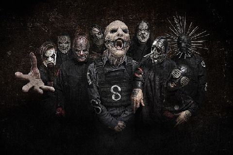
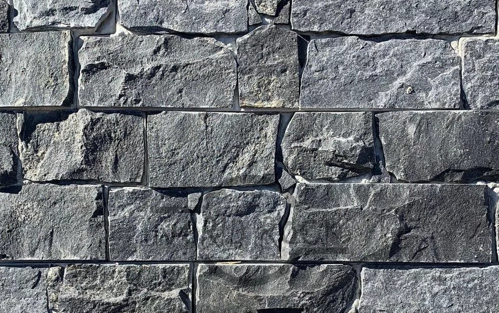
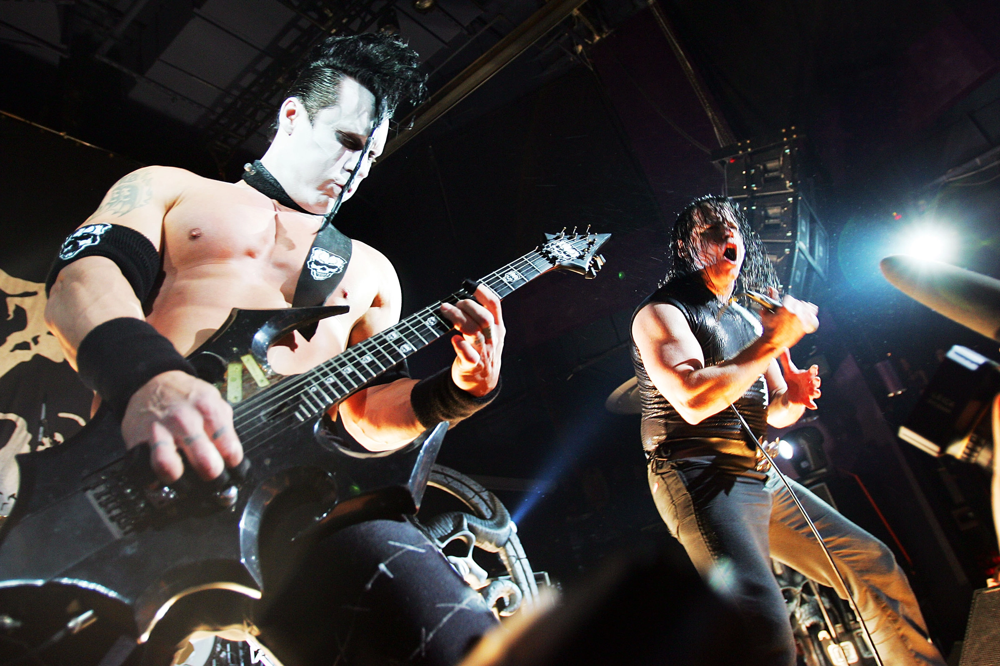
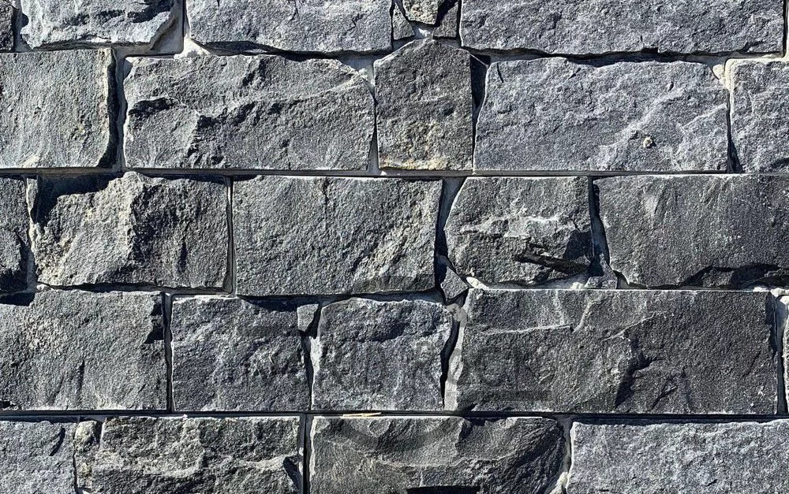
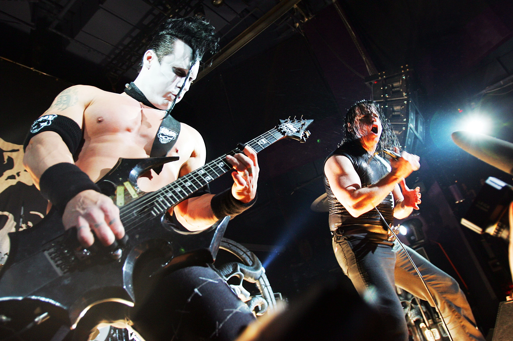

Tenho o gosto musical baseado em rock e derivados (Metal, Punk rock, etc).

Banda Slipknot, caracterizada por máscaras "macabras" e heavy metal.
ROCK.
"The Misfits", uma banda de punk rock caracterizada por pinturas faciais.
Banda Slipknot, caracterizada por máscaras "macabras" e heavy metal.
ROCK.
"The Misfits", uma banda de punk rock caracterizada por pinturas faciais.